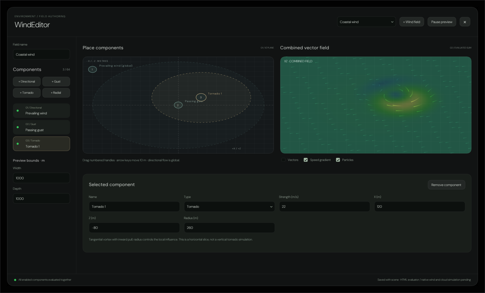
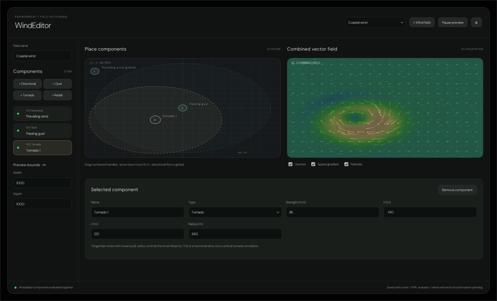
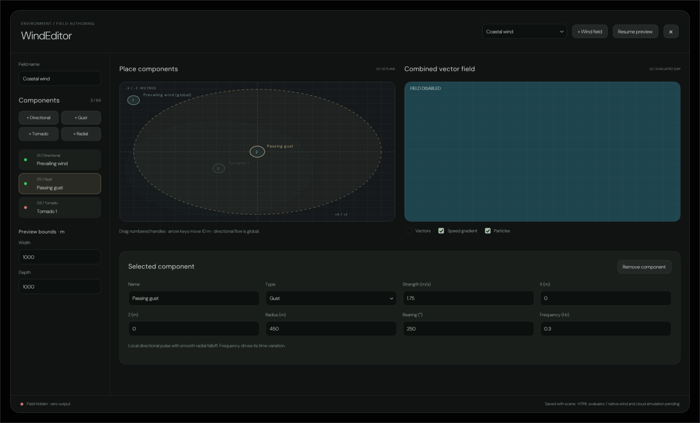
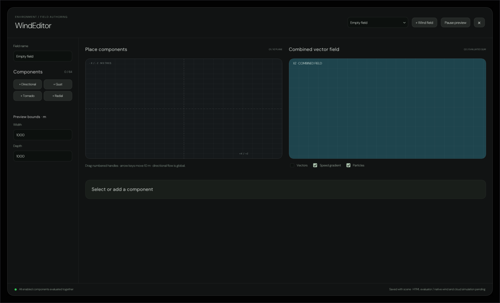

Every pixel below came out of a real ImGui draw list, rasterised on the CPU and written to PNG by
Exhibits/Workbench/WindEditor/NativeWindEditor.cpp. Nothing here is a mock-up, and nothing
has been retouched.
The source is WindPanel.jsx:503 — export default function WindEditor, the modal
the wind inspector raises from Open WindEditor · place and combine components — with its geometry
read off WindPanel.css and Editor.css. The shell is the stylesheet's
min(1600px, 100%) × min(950px, 100%) inside the backdrop's 24 px inset, so these captures
are 1648 × 998 at one device pixel per CSS pixel.
The type is now true to the browser. ImGui bakes a face so that ascent − descent equals
the size you ask for; CSS sizes the em box instead. DM Sans reports hhea ascent 992 and
descent −310 per 1000 em, so the two differ by exactly 1.302 and every CSS pixel
size is ground up by that factor before it reaches ImGui. A 12 px Pause preview measures
70.98 px here, which is what the font's own hmtx table says it measures in Chrome. The
same number is DM Sans's normal line-height, which is why a baked line is also exactly
one CSS line box tall. Two weights are baked, because the dialog is Light 300 everywhere except
.wind-section-head h2/h3 and .wind-dimensions h3, which are Regular 400.
Executed, not illustrated

The field an unsaved subject resolves to — Prevailing
wind at 7 m/s on 250°, a Passing gust at speed × gust over a 450 m
radius — plus a tornado dropped by + Tornado, which Add() places at
.12 width and −.08 depth with 22 m/s and a 260 m radius. Six property cells, because
bearing belongs to directional and gust alone and frequency to gust alone.

The state CheckWind.mjs drives the reference into:
the tornado's handle dragged to .36 / .62 of the map, which on a 1000 m slice reads back
−140 m and 120 m, then strength 36 and radius 340. The placement map is an
<svg viewBox="0 0 600 400" preserveAspectRatio="none">, so its user space is stretched
1.079 across and 0.82 down: the handle is an ellipse, the dashes are longer on one axis than the other,
and the glyphs walk on a stretched pen.

The subject hides the field, so the footer dot turns
#c67370, the note becomes Field hidden · zero output and the canvas shorts to
FIELD DISABLED. The tornado is switched off and its whole <g> drops to
0.4 opacity, handle and caption together. Selecting the gust grows the grid to eight cells —
bearing and frequency — and swaps the paragraph underneath.

With no components the counter reads 0 / 64, the
list collapses to nothing, the evaluator returns zero everywhere — the canvas sits at the cold end of
the #306e7c → #58a56e → #d3b565 ramp — and the properties card shrinks to its heading,
Select or add a component.